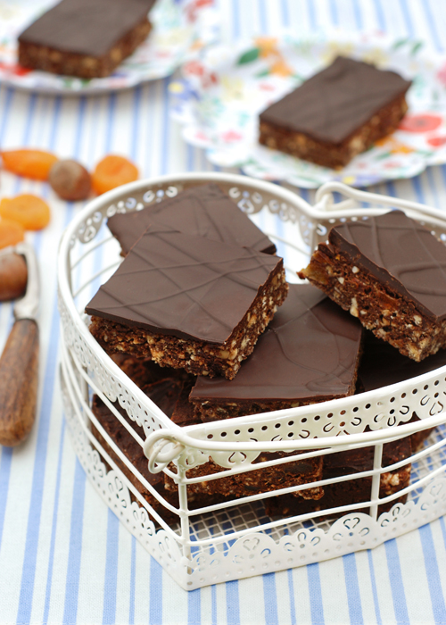
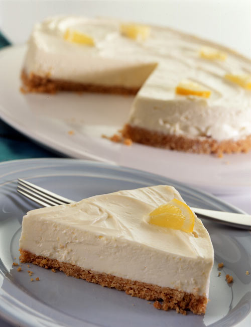
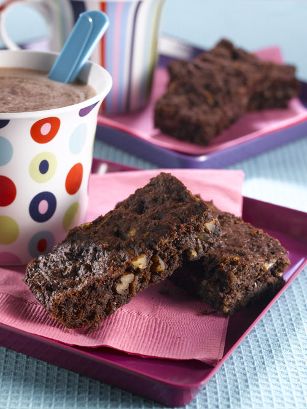

Apricot Chocolate Refrigerator Cake

Preparation notes
Serves 40
Preparation time: 90 minutes (including chilling time in the fridge)
Cooking time: 15 minutes
Ingredients
For the Cake:
200g dark chocolate*
200g butter or Tomor vegan margarine*
4 tablespoons golden syrup
1 tbsp milk or soya milk*
500g vegan digestive or almond biscuits, crushed
200g apricots, chopped
100g chopped roast hazelnuts or almonds
For the topping:
300g dark chocolate
Method
1. Melt the chocolate in a bowl over a saucepan of hot water (the water should not touch the bowl).
2. Add the butter or vegan margarine*, golden syrup and milk or soya milk* and stir.
3. Remove from the heat, then stir in the crushed digestive biscuits, apricots and hazelnuts. Mix well.
4. Line a shallow baking tray (approximately 25cm x 40cm) with parchment paper. Spoon in the chocolate biscuit mixture, press down well and chill for 1 hour.
Optional: Melt the remaining chocolate in a bowl over a saucepan of hot water. When melted, carefully spoon over the cake and spread evenly. Return to the fridge until set.
Cut into 40 pieces and serve. Will keep for up to three days in the fridge, in an airtight container.
Darkly Divine Vegan Chocolate Fudge Cake

Preparation notes
Prep time: 10 mins
Cooking time: 45 minutes
Ingredients
For the Cake:
240g self raising flour
1½ tsp bicarbonate of soda
35g cocoa
75g ground almonds
240g granulated sugar
150g hard 100% vegetable margarine
260ml soya milk
150ml natural soya yoghurt
2 tsp vanilla extract
2 drops almond extract
For the Filling:
50g soya margarine
3 tbsp water
200g icing sugar
50g cocoa
1tsp vanilla extract
To decorate:
Icing sugar
200g 70% cocoa plain chocolate, melted
Method
1. Preheat oven to 190C / 375F / Gas mark 5. Grease and base line 2 x springform 20cm cake tins, or 2 x 20cm deep sandwich tins.
2. To make the cake: sift flour, bicarbonate of soda and cocoa together into a large bowl.
3. Mix the ground almonds and sugar with the flour and cocoa mixture until evenly blended.
4. Melt the margarine. Cool slightly. Put soya milk, soya yoghurt and melted margarine in a blender and blend until smooth and well combined.
5. Mix the wet ingredients with the dry ingredients until incorporated, but do not beat.
6. Divide between the two tins, level the tops and bake in the preheated oven for about 25 minutes until firm to the touch. Do not worry if the top cracks – this is quite normal. Cool in the tins – overnight is fine.
7. To make the filling: melt the water and margarine together until the margarine is just melted. Do not let boil or get too hot. Let cool slightly.
8. Sift the icing sugar with the cocoa into a large bowl. Add the vanilla extract to the margarine and water then tip into the bowl with the icing sugar and cocoa. Mix well – the mixture will end up quite stiff. If it is runn
y, the margarine mixture was too hot – just leave it to cool down and set for a while.
9. Turn the cakes out of the tins. To make one large cake divide, and carefully spread the filling over the two halves and sandwich together.
10. Sprinkle with icing sugar and decorate with drizzles of melted chocolate.
Dairy Free Cheesecake

Preparation notes
Surves 6
Ingredients
50g vegetable/soya margarine
175g digestive biscuits
275g Soya ‘cream cheese’ eg. Tofutti Creamy Original
½ lemon, grated rind & juice
50g icing sugar
Thin slices of lemon to decorate
Method
1. For the base: Melt the margarine in a large saucepan, crush the biscuits then add to the pan.
2. Mix thoroughly then using the back of a spoon press into a lined, greased 8” flan tin. Refrigerate.
3. For the topping: Put the soya ‘cheese’ into a bowl with the lemon juice, rind and icing sugar.
4. Stir vigorously and spoon onto the chilled base.
5. Decorate with lemon slices and chill for a further ½ hour. Carefully remove flan case then indulge!
Chocolate Brownies

Preparation notes
Makes 16
Preparation time 35 mins
Cooking time 25 mins
Ingredients
225g dates
60g wholemeal flour
2 tsp baking powder
3 tbsp cocoa powder, sieved
100g vegan margarine
1 very ripe banana, mashed
75g pecans or walnuts, roughly chopped (optional)
1 tsp vanilla essence
Vegetable oil for greasing
Method
Stage one
1. Preheat the oven to 180C/350F/Gas 4.
2. Place the dates in the medium saucepan with just enough water to cover them. Cook over a medium heat for 5 minutes or until soft.
3. Once the dates have cooked, drain off the hot water, and run them under a cold tap to cool.
4. Purée the dates. (A hand blender works well for puréeing).
Stage two
1. In the small mixing bowl, sift together the flour, baking powder and cocoa powder, then set aside.
2. In the medium mixing bowl, using a fork, cream together the dates and the margarine until light and fluffy.
3. Stir the sifted flour, baking powder and cocoa powder into the date and margarine mixture.
4. Add the banana, nuts (optional) and vanilla essence.
Stage three
1. Lightly oil the baking dish, then evenly spread the mixture into it, smoothing the top with a spoon.
2. Bake in the oven for 20-25 minutes or until the brownies start to come away from the sides of the dish.
3. Allow to cool in the pan, cut and serve.